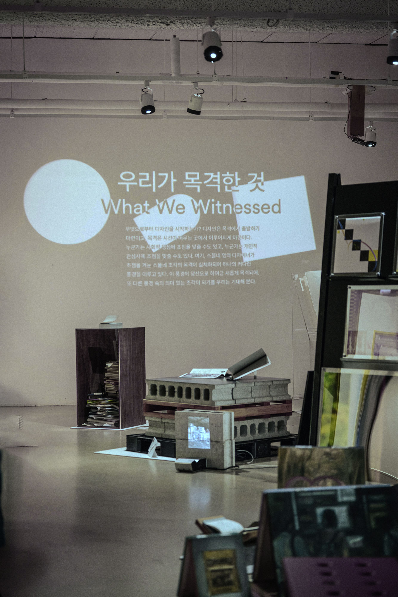

우리가 목격한 것
무엇으로부터 디자인을 시작하는가? 디자인은 목격에서 출발하기 마련이고, 목격은 시선이 머무는 곳에서 이루어지게 마련이다. 누군가는 사회적 쟁점에 초점을 맞출 수도 있고, 누군가는 개인적 관심사에 초점을 맞출 수도 있다. 여기, 스물네 명의 디자이너가 초점을 겨눈 스물네 조각의 목격이 실체화되어 하나의 커다란 풍경을 이루고 있다. 이 풍경이 당신으로 하여금 새롭게 목격되어, 또 다른 풍경 속의 의미 있는 조각이 되기를 우리는 기대해 본다.
What We Witnessed
Where does design begin? Design inevitably begins from something you witness, and witness begins from where your focus is. Some may focus on social issues, and others on personal interests. Here, twenty-four pieces of witnesses by twenty-four designers are materialized into one large landscape. We hope this landscape will be witnessed by you and become a meaningful piece of another landscape.